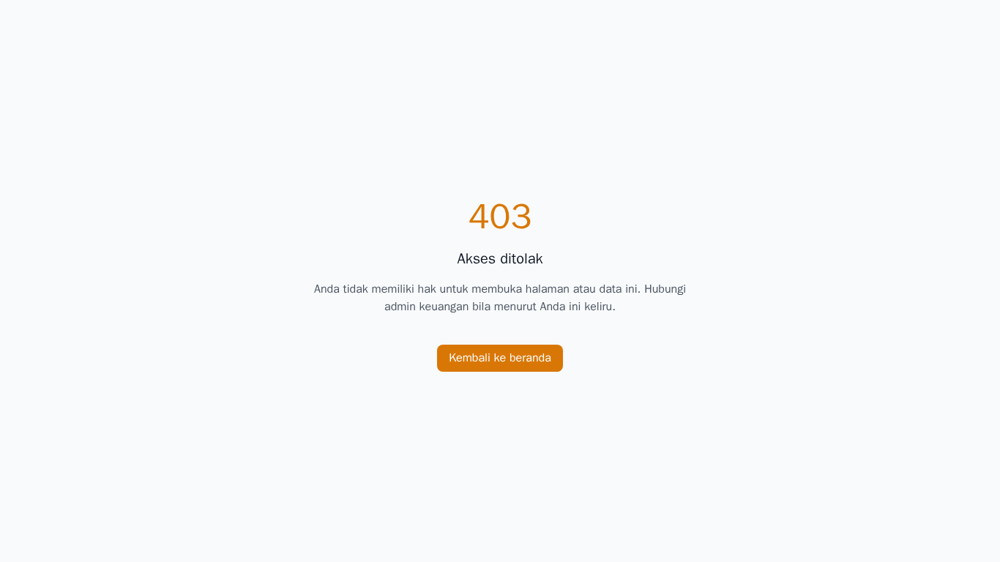
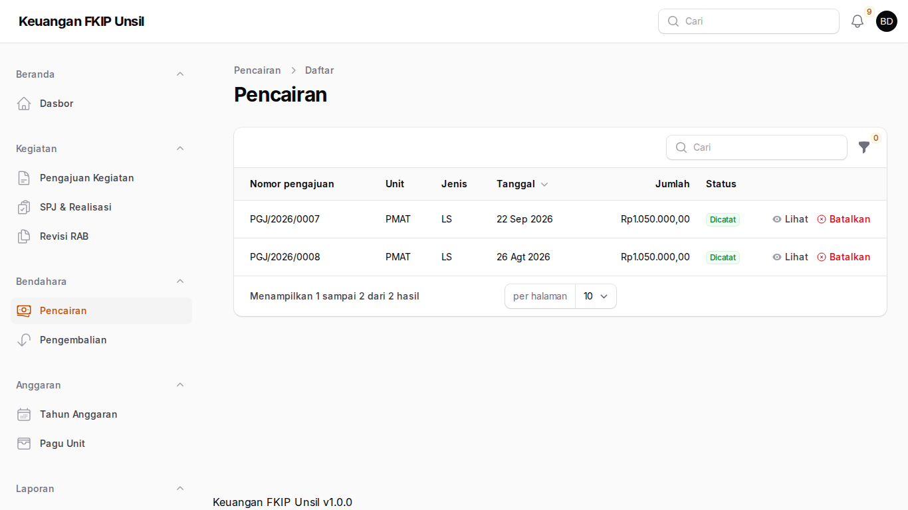
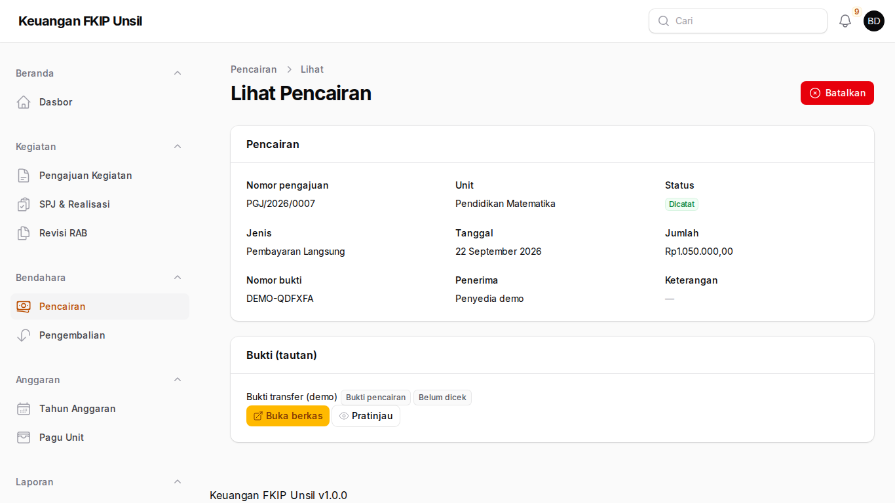
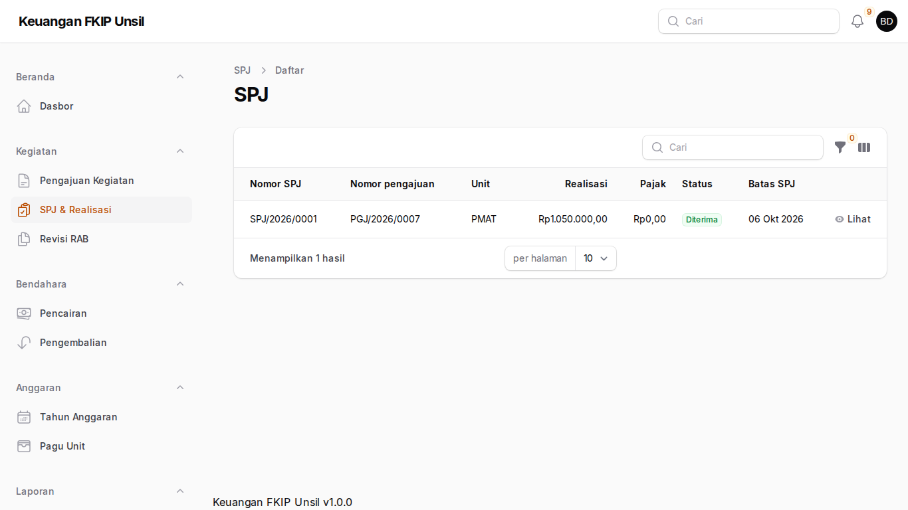
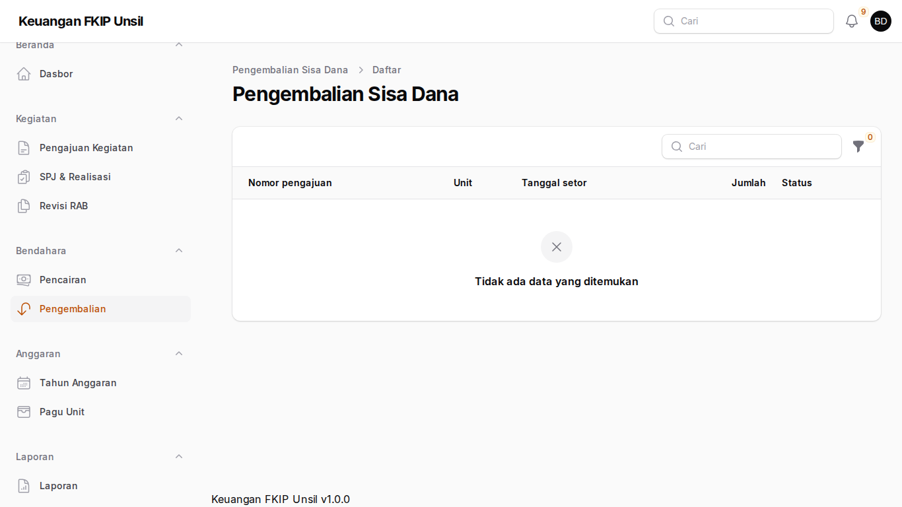

Panduan Bendahara Pengeluaran Pembantu
Peran: bpp
Tujuan peran
Mencatat pencairan dana, memverifikasi SPJ, dan memverifikasi setoran sisa dana.
Cara masuk
- Buka halaman masuk aplikasi (alamat https://supportfkip.unsil.ac.id/keuangan/panel).
- Isi Alamat email dan Kata sandi akun Anda, lalu klik Masuk.
- Peran Anda wajib MFA: saat masuk pertama kali, pindai kode QR dengan aplikasi autentikator (Google/Microsoft Authenticator), masukkan kode 6 digit, lalu simpan kode pemulihan di tempat aman.
Langkah-langkah
Pengajuan siap dicairkan
Beranda → Menunggu tindakan berisi pengajuan berstatus Disetujui. Buka pengajuan → Catat pencairan: jenis, tanggal, jumlah, dan tautan bukti transfer (akses terbatas).

Pengajuan siap dicairkan Daftar pencairan
Bendahara → Pencairan menampilkan seluruh pencairan. Σ pencairan tidak boleh melebihi total RAB.

Daftar pencairan Membatalkan pencairan
Buka pencairan → Batalkan dengan alasan bila salah catat (data tidak dihapus).

Membatalkan pencairan Verifikasi SPJ
Kegiatan → SPJ & Realisasi: buka SPJ Diajukan, periksa bukti, lengkapi nomor bukti setor pajak bila ada, lalu Terima atau Kembalikan.

Verifikasi SPJ Verifikasi setoran sisa dana
Bendahara → Pengembalian: periksa bukti setor → Verifikasi atau Tolak.

Verifikasi setoran sisa dana
Menyimpan bukti di Google Drive
Aplikasi tidak menerima unggahan berkas. Simpan bukti di Google Drive, lalu tempel tautannya.
- Simpan berkas di Shared Drive unit/fakultas (bukan Drive pribadi) agar tidak hilang saat pegawai pindah.
- Klik kanan berkas → Bagikan → Akses umum → pilih Terbatas atau Universitas Siliwangi. Jangan pilih “Siapa saja yang memiliki link” untuk kuitansi, nota, faktur, bukti transfer, dan bukti setor.
- Klik Salin link, tempel di isian Tautan (URL), dan untuk bukti keuangan centang konfirmasi akses terbatas.
- Dari ponsel: foto nota → simpan ke folder Shared Drive unit → ketuk ⋮ → Bagikan → Setelan akses → Terbatas/Universitas Siliwangi → ketuk ⋮ → Salin link → tempel di aplikasi melalui peramban ponsel.
Tautan ditolak bila memakai http://, pemendek (bit.ly, s.id), tautan folder Drive, atau domain di luar daftar (mis. dropbox.com).
Tanya-jawab
- Tidak bisa mencatat pencairan?
- Penyetuju akhir pengajuan tidak boleh mencatat pencairannya (pemisahan tugas).
Kontak
Admin Keuangan FKIP (keuangan-fkip@unsil.ac.id) · Admin TI Fakultas untuk akun & MFA.